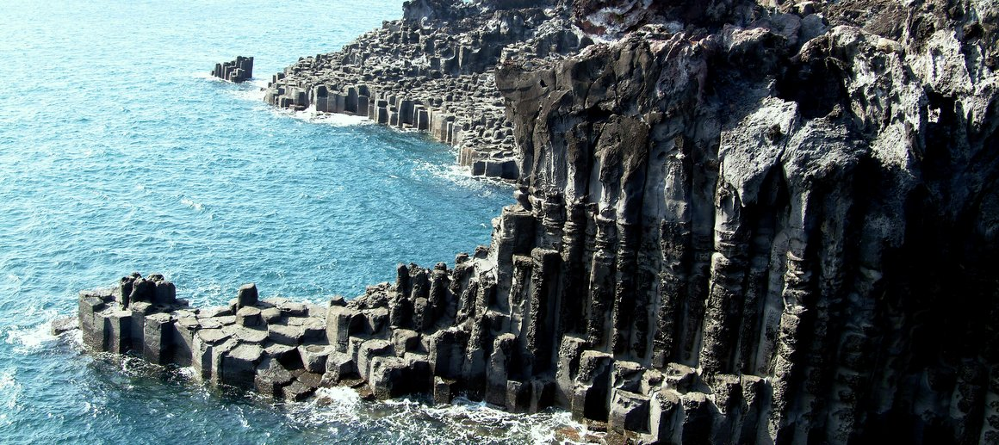

주상절리는 마치 예리한 조각 칼로 섬세하게 깎아낸 듯한 4~6각형 형태의 기둥으로, 현무암질 용암류에 나타나는 수직 절리를 말한다. 두꺼운 용암이 화구로부터 흘러나와 급격히 식으면서 발생하는 수축 작용의 결과로 형성되었다. 마치 계단을 쌓은 듯 겹겹이 서 있는 육모꼴의 돌 기둥이 병풍처럼 둘러 쳐져 있어 자연의 신비로움을 만끽할 수 있다. 그 기둥에 부딪히는 파도 또한 마음을 뺏기는 볼거리인데, 심할 때는 높이 20m 이상 치솟는 ‘쇼’가 펼쳐지기도 해서 보는 이의 넋을 빼앗는다. 중문·대포해안 주상절리대는 높이가 30~40m, 폭이 약 1㎞ 정도로 우리나라 최대 규모를 자랑하며, 제주도 천연기념물 제443호로 지정돼 있다.
대포해안주상절리대
제주특별자치도 서귀포시 이어도로 36-30
